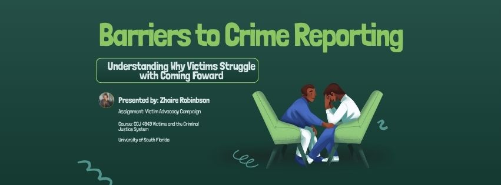
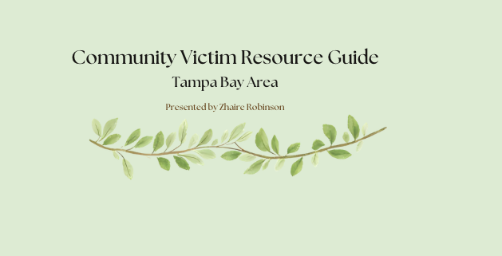

Barriers to Crime Reporting
Structured intake workflow used to assess eligibility and connect clients to legal resources.
View Project
Victim Resource Guide
Victim advocacy campaign to bring awareness as to why victims struggle with coming foward.
View Project
Client Support Workflow
System designed to improve communication and follow-up with legal aid clients.
View Project
Community Assistance Mapping
Mapping of local services available for victims of crime and underserved populations.
View Project